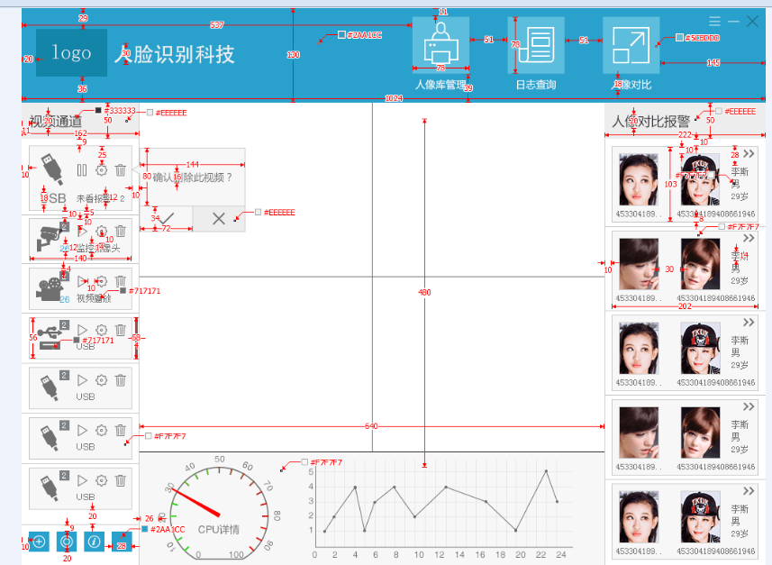
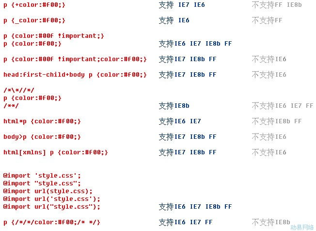
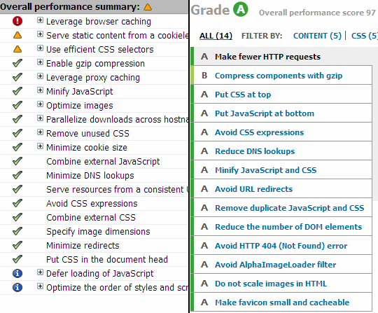
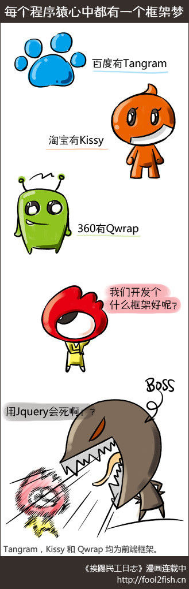
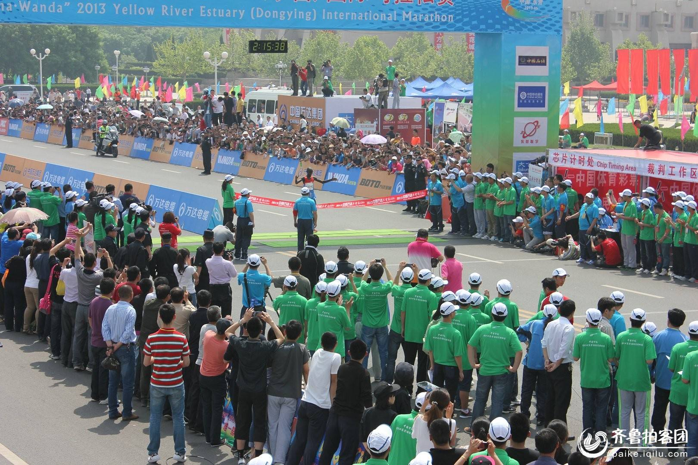

全栈开发之旅
成功的道路并不像想象得那么拥挤，因为在人生的马拉松长路上，绝大部分人跑不到一半就主动退下来了。到后来，剩下的少数人不是嫌竞争对手太多，而是发愁怎样找一个同伴陪自己一同跑下去。
全栈是什么栈
最常见的解释是说，所谓全栈，就是一个人从前到后搞定整个网站。
听上去很牛的样子。
实际上是最没有效率的做法。
管理学认为，使劳动生产率最大化的手段是：分工。
一个人从前做到后也就是自己在家鼓捣个博客还可以，绝对无法成规模的运用在企业中。
我理解的“全栈”其实是“全面开战”的同义词。
全栈工程师就是“全面开战的前端工程师”。
这倒不是说前端天生好战，实在是为了争夺生存空间，不得不战。
任何一项职业，都要有自己的核心竞争力。
前端的核心竞争力是什么？
立身之本：重构
在前端这个岗位还没有出现的时候，最接近的岗位应该是：“网站策划与制作工程师”。
隶属设计通道，工作定位为：设计理念还原。
简单来说，就是切图：

纯粹的苦活累活，技术含量很低，成长空间有限。
直到这本书出版：
于是，我们的岗位变成了：“网页重构工程师”。
那时，我们的核心竞争力主要是三个：
首先，浏览效果兼容

讲个笑话，IE 和 Firefox 大战了三百回合，然后 Chrome 统一了天下。
前端对于
IE6的痛恨，那可真是发自骨子里的……没被折磨过的人完全不可领悟……恨屋及乌直至所有微软相关！
其次，网页性能优化

现在有谁还知道雅虎关于网页性能优化的“35条军规”吗？
当时可是面试必考题哦。
最后，前端开发框架
好消息是：我们终于有了“前端工程师”这个岗位。
坏消息是：我们迎来了百家争鸣的战国时代。

为什么会这样呢？
我只能说，前端的求生欲很强了。
毕竟大家都想要升职加薪……
然而，就这么一个螺蛳壳（浏览器），再怎么做道场也就是那样了。
难不成都要转型成为所谓的“前端布道师”？
纵深发展：Node
Node 真的是个意外。
在移动互联网时代，“Flash工程师”已经被干掉了，难道下一个就是“前端工程师”？
Webkit一统天下，网页兼容性无需过多考虑；- 移动页面结构简单，4G网速飞起，流量越来越便宜，也无需过多关注网页性能；
- 唯一还剩下的前端框架，难道你真的能写的比jQuery还好吗？
所以传统前端的功力被废了大半，后面的路该怎么走？
本来我们以为 Web APP 以及 Hybrid APP 就是发展方向。
毕竟都是广义上的前端，况且假设能从 Native 那边抢点饭吃，公司也是非常乐意的。（同一份UI要实现三套的怨念……）
幸好还有 Node。
Node 之于前端，就像是哥伦布之于欧洲。
通过它，前端们终于发现了一块前所未有的“新大陆”。
无论原住民们怎么说，我们自己总要记得一句：
任何能够用JavaScript实现的应用系统，最终都必将用JavaScript实现。（Any application that can be written in JavaScript, will eventually be written in JavaScript.）
横向扩张：Weex
与后台的战役时日还长，在另外一条战线，与 Native 的战争也是方兴未艾。
无可否认，由于浏览器的种种限制，Web APP 以及 Hybrid APP 都凉了。（所以说，幸好还有 Node。）
然而，从 React Native 到 Weex 到 微信小程序……却在变得火爆。
虽然每一篇能搜到的博文基本上都叫做“**踩坑指南”。
但无论如何，不管是从企业成本优化的角度，还是从前端职业发展的角度，这都是我们必须攻克的堡垒。
而且，情形很乐观。
全栈开发之旅，记录的就是在这“纵深发展，横向扩张”的过程中，所走过的那一道道难关，以及过关之后的无限风光~
